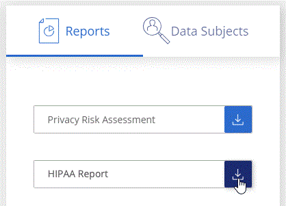

Demander de modifier un document
Demander de modifier un document Modifier sur GitHub
Modifier sur GitHub Guide des contributeurs
Guide des contributeursAffichage des rapports de conformité
Contributeurs
Cloud Data SENSE fournit des rapports qui vous aideront à mieux comprendre l’état du programme de confidentialité des données de votre entreprise.
Par défaut, les tableaux de bord Cloud Data Sense affichent des données de conformité et de gouvernance pour tous les environnements de travail, bases de données et sources de données. Si vous souhaitez afficher des rapports contenant des données pour certains environnements de travail uniquement, sélectionnez ces environnements de travail.

|
|
Rapport d’évaluation des risques pour la confidentialité
Le rapport d’évaluation des risques pour la protection de la vie privée fournit une vue d’ensemble de l’état des risques pour la confidentialité de votre organisation, conformément aux réglementations en matière de confidentialité, telles que le Règlement sur la protection de la vie privée et l’ACFPC. Le rapport contient les informations suivantes :
- Statut de conformité
-
A indice de gravité et la distribution des données, qu’elles soient non sensibles, personnelles ou sensibles.
- Présentation de l’évaluation
-
Une ventilation des types de données personnelles ainsi que des catégories de données.
- Sujets de données dans cette évaluation
-
Nombre de personnes, par lieu, pour lesquelles des identificateurs nationaux ont été trouvés.
Génération du rapport d’évaluation des risques pour la confidentialité
Accédez à l’onglet détection de données pour générer le rapport.
-
Dans le menu BlueXP, cliquez sur gouvernance > Classification.
-
Cliquez sur conformité, puis cliquez sur l’icône de téléchargement en regard de évaluation des risques de confidentialité sous Rapports.

Cloud Data SENSE génère un rapport PDF que vous pouvez consulter et envoyer à d’autres groupes, le cas échéant.
Indice de gravité
Cloud Data Sense calcule le score de gravité pour le rapport d’évaluation des risques pour la confidentialité sur la base de trois variables :
-
Pourcentage de données personnelles sur toutes les données.
-
Le pourcentage de données personnelles sensibles hors de toutes les données.
-
Le pourcentage de fichiers qui incluent des sujets de données, déterminé par des identificateurs nationaux tels que les ID nationaux, les numéros de sécurité sociale et les numéros d’identification fiscale.
La logique utilisée pour déterminer le score est la suivante :
| Indice de gravité | Logique |
|---|---|
0 |
Les trois variables sont exactement 0 % |
1 |
L’une des variables est supérieure à 0 % |
2 |
L’une des variables est supérieure à 3 % |
3 |
Deux des variables sont supérieures à 3 % |
4 |
Trois des variables sont supérieures à 3 % |
5 |
L’une des variables est supérieure à 6 % |
6 |
Deux des variables sont supérieures à 6 % |
7 |
Trois des variables sont supérieures à 6 % |
8 |
L’une des variables est supérieure à 15 % |
9 |
Deux des variables sont supérieures à 15 % |
10 |
Trois des variables sont supérieures à 15 % |
Rapport PCI DSS
Le rapport PCI DSS (Payment Card Industry Data Security Standard) peut vous aider à identifier la distribution des informations de carte de crédit dans vos dossiers. Le rapport contient les informations suivantes :
- Présentation
-
Combien de fichiers contiennent des informations de carte de crédit et dans quels environnements de travail.
- Le cryptage
-
Le pourcentage de fichiers contenant des informations de carte de crédit sur des environnements de travail cryptés ou non cryptés. Ces informations sont spécifiques à Cloud Volumes ONTAP.
- Protection contre les ransomwares
-
Le pourcentage de fichiers contenant des informations de carte de crédit sur des environnements de travail où la protection par ransomware est activée ou non. Ces informations sont spécifiques à Cloud Volumes ONTAP.
- La conservation
-
Délai de la dernière modification des fichiers. Ceci est utile car vous ne devez pas conserver les informations de carte de crédit plus longtemps que vous n’avez besoin de les traiter.
- Distribution des informations de carte de crédit
-
Les environnements de travail où les informations de carte de crédit ont été trouvées et où le chiffrement et la protection contre les ransomwares sont activés.
Génération du rapport PCI DSS
Accédez à l’onglet détection de données pour générer le rapport.
-
Dans le menu BlueXP, cliquez sur gouvernance > Classification.
-
Cliquez sur Compliance, puis sur l’icône de téléchargement en regard de PCI DSS Report sous Reports.

Cloud Data SENSE génère un rapport PDF que vous pouvez consulter et envoyer à d’autres groupes, le cas échéant.
Rapport HIPAA
Le rapport HIPAA (Health Insurance Portability and Accountability Act) peut vous aider à identifier les fichiers contenant des informations sur la santé. Il est conçu pour aider votre organisation à respecter les lois HIPAA sur la protection des données personnelles. Le « Cloud Data SENSE » inclut plusieurs aspects :
-
Modèle de référence de santé
-
Code médical ICD-10-cm
-
Code médical ICD-9-cm
-
RH – catégorie Santé
-
Catégorie données d’application de santé
Le rapport contient les informations suivantes :
- Présentation
-
Combien de fichiers contiennent des informations sur l’état de santé et dans quels environnements de travail.
- Le cryptage
-
Le pourcentage de fichiers contenant des informations de santé sur des environnements de travail chiffrés ou non cryptés. Ces informations sont spécifiques à Cloud Volumes ONTAP.
- Protection contre les ransomwares
-
Le pourcentage de fichiers contenant des informations d’état sur des environnements de travail qui n’ont pas ou qui sont sur lesquels une protection par ransomware est activée. Ces informations sont spécifiques à Cloud Volumes ONTAP.
- La conservation
-
Délai de la dernière modification des fichiers. Ceci est utile parce que vous ne devez pas conserver les renseignements sur la santé plus longtemps que vous n’avez besoin de les traiter.
- Distribution des renseignements sur la santé
-
Les environnements de travail dans lesquels les informations de santé ont été trouvées et si le chiffrement et la protection par ransomware sont activés.
Génération du rapport HIPAA
Accédez à l’onglet détection de données pour générer le rapport.
-
Dans le menu BlueXP, cliquez sur gouvernance > Classification.
-
Cliquez sur conformité, puis cliquez sur l’icône de téléchargement en regard de Rapport HIPAA sous Rapports.

Cloud Data SENSE génère un rapport PDF que vous pouvez consulter et envoyer à d’autres groupes, le cas échéant.
Rapport de mappage de données
Le rapport de mappage de données offre une vue d’ensemble des données stockées dans les sources de données de votre entreprise pour vous aider à prendre des décisions concernant la migration, la sauvegarde, la sécurité et les processus de conformité. Ce rapport répertorie d’abord un rapport de présentation résumant tous vos environnements de travail et vos sources de données, puis fournit une répartition pour chaque environnement de travail.
Le rapport contient les informations suivantes :
- Capacité d’utilisation
-
Pour tous les environnements de travail : indique le nombre de fichiers et la capacité utilisée pour chaque environnement de travail. Pour les environnements de travail uniques : répertorie les fichiers qui utilisent la capacité la plus élevée.
- Âge des données
-
Fournit trois graphiques pour la date de création, la dernière modification ou le dernier accès aux fichiers. Répertorie le nombre de fichiers et leur capacité utilisée, en fonction de certaines plages de dates.
- Taille des données
-
Répertorie le nombre de fichiers qui existent dans certaines plages de tailles dans vos environnements de travail.
- Types de fichiers
-
Indique le nombre total de fichiers et la capacité utilisée pour chaque type de fichier stocké dans vos environnements de travail.
Génération du rapport de mappage de données
Accédez à l’onglet détection de données pour générer le rapport.
-
Dans le menu BlueXP, cliquez sur gouvernance > Classification.
-
Cliquez sur gouvernance, puis cliquez sur le bouton Rapport de la vue d’ensemble de la cartographie de données complète dans le tableau de bord de gouvernance.

Cloud Data SENSE génère un rapport PDF que vous pouvez consulter et envoyer à d’autres groupes, le cas échéant.
Rapport d’enquête de données
Le rapport d’enquête de données est un téléchargement du contenu de la page d’enquête de données. "En savoir plus sur la page Data Investigation".
Vous pouvez enregistrer le rapport sur la machine locale en tant que fichier .CSV (qui peut inclure jusqu’à 5,000 lignes de données), ou en tant que fichier .JSON que vous exportez vers un partage NFS (qui peut inclure un nombre illimité de lignes). Si Data Sense analyse des fichiers (données non structurées), des répertoires (dossiers et partages de fichiers) ou des bases de données (données structurées), il peut y avoir jusqu’à trois fichiers de rapports téléchargés.
Lors de l’exportation vers un partage de fichiers, assurez-vous que Data Sense dispose des autorisations appropriées pour l’accès à l’exportation.
Génération du rapport d’investigation des données
-
Dans la page Data Investigation, cliquez sur le bouton
 en haut à droite de la page.
en haut à droite de la page. -
Indiquez si vous souhaitez télécharger un rapport .CSV ou .JSON de données, puis cliquez sur Télécharger le rapport.

Lors de la sélection d’un rapport .JSON, entrez le nom du partage NFS dans lequel le rapport sera téléchargé au format
<host_name>:/<share_path>.
Une boîte de dialogue affiche un message indiquant que les rapports sont en cours de téléchargement.
Vous pouvez afficher la progression de la génération du rapport JSON dans le "Volet État des actions".
Ce qui est inclus dans chaque rapport d’enquête de données
Le non structuré fichier de données contient les informations suivantes sur vos fichiers :
-
Nom du fichier
-
Type d’emplacement
-
Nom de l’environnement de travail
-
Référentiel de stockage (par exemple, un volume, un compartiment, des partages)
-
Type d’environnement de travail
-
Chemin des fichiers
-
Type de fichier
-
Taille du fichier
-
Heure de création
-
Dernière modification
-
Dernier accès
-
Propriétaire du fichier
-
Catégorie
-
Informations personnelles
-
Informations personnelles sensibles
-
Date de détection de suppression
Une date de détection de suppression identifie la date à laquelle le fichier a été supprimé ou déplacé. Cela vous permet d’identifier le moment où des fichiers sensibles ont été déplacés. Les fichiers supprimés ne font pas partie du nombre de fichiers qui s’affiche dans le tableau de bord ou sur la page Investigation. Les fichiers n’apparaissent que dans les rapports CSV.
Le Rapport de données de répertoires non structurés inclut les informations suivantes sur vos dossiers et partages de fichiers :
-
Nom de l’environnement de travail
-
Référentiel de stockage (par exemple, un dossier ou des partages de fichiers)
-
Type d’environnement de travail
-
Chemin du fichier (nom du répertoire)
-
Propriétaire du fichier
-
Heure de création
-
Heure découverte
-
Dernière modification
-
Dernier accès
-
Ouvrez les autorisations
-
Type de répertoire
Le Rapport de données structurées comprend les informations suivantes sur vos tables de bases de données :
-
NOM de la table DB
-
Type d’emplacement
-
Nom de l’environnement de travail
-
Référentiel de stockage (par exemple, un schéma)
-
Nombre de colonnes
-
Nombre de lignes
-
Informations personnelles
-
Informations personnelles sensibles
Sélection des environnements de travail pour les rapports
Vous pouvez filtrer le contenu du tableau de bord Cloud Data Sense Compliance pour consulter les données de conformité pour tous les environnements de travail et bases de données, ou pour des environnements de travail spécifiques uniquement.
Lorsque vous filtrez le tableau de bord, Data SENSE évalue les données de conformité et les rapports aux environnements de travail que vous avez sélectionnés.
-
Cliquez sur la liste déroulante du filtre, sélectionnez les environnements de travail pour lesquels vous souhaitez afficher les données, puis cliquez sur Afficher.